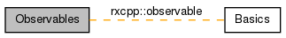

|
RxCpp
The Reactive Extensions for Native (RxCpp) is a library for composing asynchronous and event-based programs using observable sequences and LINQ-style query operators in both C and C++.
|
|
RxCpp
The Reactive Extensions for Native (RxCpp) is a library for composing asynchronous and event-based programs using observable sequences and LINQ-style query operators in both C and C++.
|
These are the set of observable classes in rxcpp. More...
|  |
Classes | |
| class | rxcpp::connectable_observable< T, SourceOperator > |
| a source of values that is shared across all subscribers and does not start until connectable_observable::connect() is called. More... | |
| class | rxcpp::grouped_observable< K, T, SourceOperator > |
| a source of observables which each emit values from one category specified by the key selector. More... | |
| class | rxcpp::blocking_observable< T, Observable > |
| a source of values whose methods block until all values have been emitted. subscribe or use one of the operator methods that reduce the values emitted to a single value. More... | |
| class | rxcpp::test::testable_observable< T > |
| a source of values that records the time of each subscription/unsubscription and all the values and the time they were emitted. More... | |
| class | rxcpp::observable< T, SourceOperator > |
| a source of values. subscribe or use one of the operator methods that return a new observable, which uses this observable as a source. More... | |
These are the set of observable classes in rxcpp.
 1.7.6.1
1.7.6.1